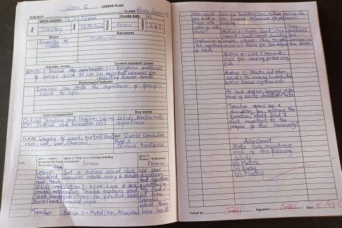
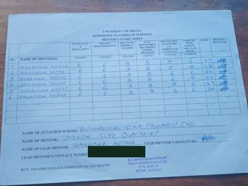

Reflections & Growth
What my internship taught me, and where I want to grow.
Five weeks with a Basic 7 class showed me that good teaching is a cycle of preparing, teaching, checking and reflecting.

Growth Reflection
The internship gave me an important opportunity to develop practical teaching skills and to understand the responsibilities of the teaching profession. Through lesson preparation, classroom practice, assessment and reflection, I built my ability to explain concepts, engage learners and respond to different learning needs.
When I reviewed my teaching philosophy for my journal, it became more detailed about inclusion, different learning needs, learner participation, assessment, feedback and working with parents and colleagues. I now understand that teaching is more than delivering information: I must check whether learners are learning, adapt my methods and reflect on my practice.
“Every learner can make progress when teaching is purposeful, inclusive and responsive to their needs.”
— Solomon Kofie
Areas for Improvement
My next steps as a teacher.
Time Management
Planning time for each stage of a lesson, so there is always room to review the main points and assess learning.
Differentiation
Responding better to learners who work at different paces and need different kinds of support.
Learning Resources
Building a wider range of safe, low-cost and locally available teaching materials.
Subject Knowledge & Methods
Strengthening my Science knowledge and teaching methods, and learning from experienced educators.
Reflective Journal
Five entries from my internship journal.
Lesson Preparation & Delivery
Effective teaching begins with careful preparation. A lesson plan is a guide rather than a script, so I need to watch learners' responses and adjust my explanations.
Learner Participation
Questions, examples, pair work and short exercises let learners show their thinking and reveal misconceptions. I made sure participation was not limited to the confident learners.
Teaching & Learning Materials
Simply displaying a material is not enough. I need to guide learners to observe, discuss and draw conclusions from it, and make sure every learner can see or use it.
Assessment & Feedback
Checking understanding throughout a lesson works better than waiting until the end of a topic. Learners need feedback on what they did well and how to improve.
Professional Growth
Each lesson is a chance to notice what worked, what could be improved and how learners responded. I need to stay open to feedback and willing to change.
Mentor Feedback
My mentor, Joseph Slee Quayson, scored me each week for punctuality, dress, hygiene, care for school property, co-curricular support and keeping school rules. My weekly totals ranged from 28 to 30 out of 30. I used his feedback to improve my lesson preparation, explanations, classroom management and assessment.
